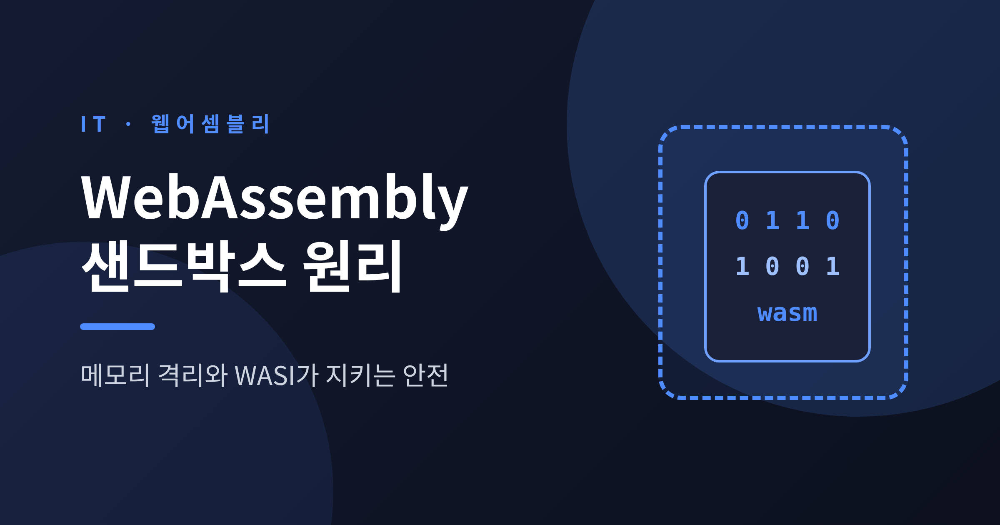
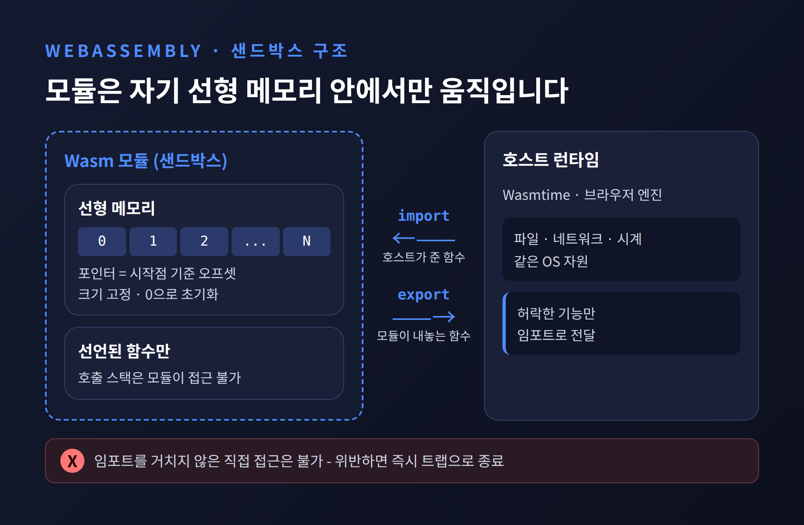
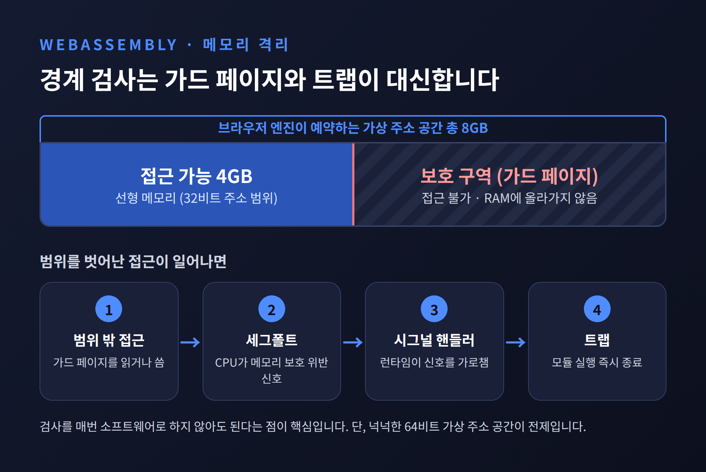
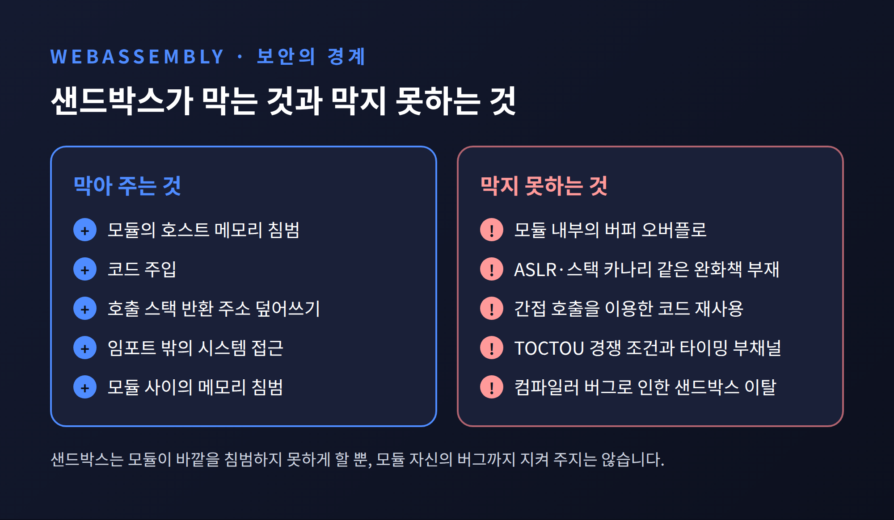
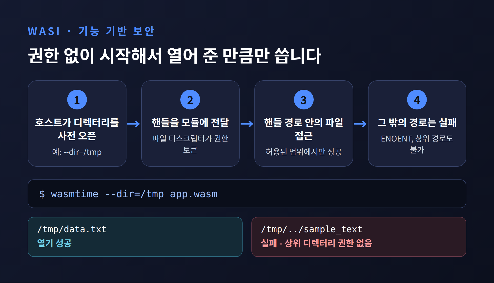
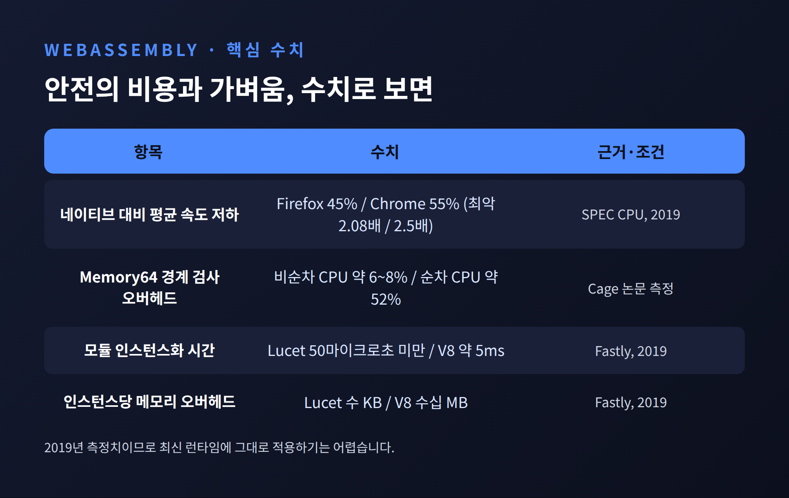

WebAssembly 샌드박스 원리, 메모리 격리와 WASI가 지키는 안전

오늘은 WebAssembly가 브라우저 밖에서도 안전하게 네이티브에 가깝게 돌아가는 원리를 정리해 보려 합니다. 핵심 답은 두 겹입니다. 모듈은 자기 선형 메모리와 선언된 함수 안에서만 움직이고, 바깥 세계는 호스트가 건네준 권한으로만 만질 수 있습니다. 이 구조가 실제로 어떻게 구현되고, 어디서 한계를 드러내는지까지 차례로 따라가 보겠습니다.
모듈은 자기 선형 메모리 안에서만 산다
WebAssembly 모듈은 호스트 런타임과 분리된 샌드박스에서 실행됩니다. 공식 문서는 이를 fault isolation 기법이라고 설명합니다. 모듈은 승인된 API, 즉 임포트를 거치지 않고는 밖으로 나갈 수 없습니다.
메모리 구조가 그 출발점입니다. 모듈이 다루는 포인터는 실제 가상 주소가 아닙니다. 선형 메모리의 시작점에서 얼마나 떨어졌는지를 나타내는 오프셋입니다. 선형 메모리는 격리된 영역이며, 최대 크기가 정해져 있고 기본적으로 0으로 채워져 있습니다.
외부와 닿는 길도 좁습니다. 모듈은 임포트로 받은 함수를 부르고, 익스포트로 내놓은 함수를 호스트가 부릅니다. 그 밖의 경로는 없습니다. Wasmtime 문서에 따르면 허용된 모든 연산에 정의되지 않은 동작, 이른바 undefined behavior도 없습니다.

경계 검사는 CPU의 메모리 보호가 대신합니다
모든 메모리 접근마다 범위를 검사하면 느려집니다. 그래서 주요 브라우저 엔진은 다른 길을 택했습니다. V8, JavaScriptCore, SpiderMonkey는 64비트 환경에서 인스턴스마다 8GB의 가상 주소 공간을 예약합니다. 32비트 주소로 닿을 수 있는 4GB가 실제 메모리 영역이고, 그 뒤 나머지가 보호 구역입니다.
보호 구역의 페이지는 접근 불가로 표시됩니다. 모듈이 범위를 벗어나 읽거나 쓰면 세그멘테이션 폴트가 나고, 런타임이 시그널 핸들러로 이를 잡아 트랩으로 바꿉니다. POSIX에서는 mprotect와 SIGSEGV, Windows에서는 벡터화 예외 핸들러를 씁니다. 이 보호 페이지는 실제 RAM에 올라가지 않아서 상주 메모리도 늘리지 않습니다.
Wasmtime도 같은 발상입니다. 64비트 기본 설정이 4GiB를 예약해 32비트 선형 메모리의 경계 검사를 대부분 생략합니다.
이 방식에는 전제가 있습니다. 가상 주소 공간이 넉넉해야 합니다. 그래서 32비트 시스템에는 쓸 수 없습니다. 64비트 주소를 쓰는 Memory64로 넘어가면 보호 구역 전략도 비현실적이 되어, 명시적 경계 검사가 필요합니다. Cage 논문은 그 값을 이렇게 측정했습니다. 비순차 CPU에서는 약 6~8%, 순차 CPU에서는 약 52%의 오버헤드입니다. 검사를 앞질러 추측 실행할 수 있는 CPU인지가 갈림길이었습니다.

예전에는 이런 트릭이 OS와 가상 메모리를 전제로 했습니다. 지금은 사정이 다릅니다. Wasmtime은 mmap이나 가상 메모리 없이 malloc만으로도 돌아가도록 구성할 수 있고, 시그널 대신 명시적 검사를 내보낼 수도 있습니다. 덕분에 OS나 가상 메모리가 없는 임베디드 환경까지 닿게 되었습니다.
제어 흐름을 묶는 네 가지 장치
메모리 밖으로 못 나간다고 끝이 아닙니다. 코드의 흐름을 가로채는 길도 막아야 합니다. 공식 보안 문서가 꼽는 장치는 다음과 같습니다.
첫째, 모듈은 호출 가능한 모든 함수와 타입을 로드 시점에 선언해야 합니다. 둘째, 구조적 제어 흐름 덕분에 함수 중간으로 마음대로 뛰어들 수 없습니다. 셋째, 호출 스택은 모듈이 접근할 수 없는 별도 영역입니다. 힙 버퍼를 넘치게 해도 반환 주소는 덮어쓸 수 없습니다. 넷째, 간접 호출은 실행 시점에 타입 시그니처를 확인합니다. 호출 지점이 기대한 시그니처와 다르면 실행되지 않습니다.
컴파일된 코드는 불변이고 런타임에 관찰할 수 없습니다. 그래서 공격자가 코드를 주입하는 전통적 방식, 명령어 조각을 이어 붙이는 ROP 같은 공격이 성립하지 않습니다. 이상이 감지되면 트랩이 걸려 실행이 즉시 끝납니다.
샌드박스가 지켜 주지 않는 것
여기까지 읽으면 Wasm이 모든 것을 막아 줄 것 같습니다. 그렇지는 않습니다.
공식 문서도 한계를 적어 둡니다. 간접 호출을 이용한 코드 재사용 공격, TOCTOU 경쟁 조건, 타이밍 기반 부채널은 막지 못합니다. 더 근본적인 문제는 모듈 안쪽입니다. 2020년 USENIX Security에 발표된 연구는 C와 C++ 취약점이 Wasm으로 컴파일돼도 그대로 악용된다는 점을 보였습니다. 스택 카나리가 없고, ASLR이 없어 스택과 힙 위치가 예측 가능하며, 문자열 리터럴을 포함한 선형 메모리의 모든 데이터가 쓰기 가능합니다. 논문은 네이티브에서는 완화책 덕분에 더는 통하지 않는 고전적 취약점이 Wasm에서는 완전히 노출된다고 결론 내립니다.
정리하면 이렇습니다. 샌드박스는 모듈이 호스트와 다른 모듈을 침범하지 못하게 합니다. 모듈 자신의 버그로부터 모듈을 지켜 주지는 않습니다.
샌드박스의 가장 얇은 곳은 또 있습니다. 메모리 모델을 기계어로 옮기는 컴파일러입니다. 2023년 3월 공개된 CVE-2023-26489(CVSS 9.9)는 Wasmtime의 Cranelift가 x86_64에서 주소를 계산하다 Wasm이 정한 33비트 대신 35비트 유효 주소를 만든 사례였습니다. 선형 메모리에서 약 34GB 범위를 읽고 쓸 수 있었습니다. 2026년 4월에는 aarch64에서 로드 연산이 잘못 변환되어 호스트 메모리를 읽고 쓸 수 있는 취약점도 공개되었습니다. 다만 이 경우는 64비트 선형 메모리, Spectre 완화 비활성, 시그널 기반 트랩 비활성이 겹쳐야 악용됩니다.

그래서 Wasmtime은 구현 쪽 방어를 겹겹이 둡니다. 메모리 안전 언어인 Rust로 작성했고, OSS-Fuzz로 24시간 퍼징하며, 컴파일 결과가 샌드박스를 벗어나지 않음을 증명하려는 VeriWasm 같은 형식 검증 연구도 이어 갑니다. 그럼에도 버그는 나옵니다. 완벽하다고 말하기는 어렵고, 패치를 빠르게 받는 운영이 전제가 됩니다.
WASI는 권한 없이 시작해서 하나씩 받습니다
메모리 샌드박스만으로는 파일도 네트워크도 쓸 수 없습니다. 이 틈을 메우는 규격이 WASI입니다. 핵심은 기능 기반(capability-based) 보안입니다. 모듈은 아무 권한도 없이 시작하고, 호스트가 명시적으로 허락한 동작만 수행합니다.
파일 시스템이 대표 예입니다. 임베더가 특정 호스트 디렉터리를 미리 열어 그 핸들을 모듈에 건넵니다. 이것이 사전 오픈(preopen)입니다. 모듈은 이 핸들을 통해서만 파일에 닿습니다. 열어 주지 않은 경로를 열려고 하면 ENOENT로 실패합니다.
wasmtime --dir=/tmp로 /tmp만 열어 준 경우를 생각해 보겠습니다. 모듈이 /tmp/../sample_text 같은 경로로 위로 올라가려 해도 소용없습니다. 상위 디렉터리에 대한 권한 자체가 없기 때문입니다. 그래서 사용자 권한에 기대는 기존 방식과 달리 암묵적 권한, 이른바 ambient authority가 없습니다. wasi-libc가 POSIX 호출을 이 모델에 맞게 바꿔 주므로 기존 C 코드를 고칠 필요도 없습니다.

규격도 진화해 왔습니다. 초기 Preview 1은 파일 입출력, 환경 변수, 난수 같은 POSIX 풍 기능만 있었고 소켓과 스레드는 없었습니다. 2024년 1월 25일 출시된 WASI 0.2는 컴포넌트 모델을 기반으로 wasi-cli, wasi-http 같은 여러 world를 정의했습니다. 어떤 인터페이스든 가상화할 수 있어서 모듈의 외부 환경 전체를 임포트와 익스포트로 통제할 수 있습니다. 2026년 6월 11일에는 stream과 future를 갖춘 네이티브 async의 WASI 0.3이 나왔습니다.
네이티브에 얼마나 가까운가
안전 검사에는 값이 듭니다. 2019년 USENIX ATC 논문은 SPEC CPU 벤치마크에서 Wasm이 네이티브보다 평균 45%(Firefox)에서 55%(Chrome) 느리고, 최악의 경우 2.08배와 2.5배까지 느려졌다고 보고했습니다. Chrome에서는 load가 2.02배, store가 2.30배 늘었습니다. 안전 검사가 만드는 분기와 명령어 증가가 원인으로 지목되었습니다.
이 수치는 2019년 브라우저 엔진 기준입니다. 최신 런타임에 그대로 대입하기는 어렵습니다. Wasmer 6.0이 Coremark에서 네이티브의 약 95%를 주장하지만 업체 측 수치라 참고로만 볼 만합니다.
Wasm이 강한 곳은 오히려 기동과 밀도입니다. Fastly의 Lucet은 2019년 모듈을 50마이크로초 미만에, 메모리 오버헤드 몇 KB로 인스턴스화한다고 밝혔습니다. 비교 대상인 Chromium V8은 약 5ms에 인스턴스당 수십 MB였습니다. Wasmtime의 풀링 할당자는 메모리와 테이블을 미리 확보해 두고, copy-on-write 메모리 이미지로 복사를 처음 쓰는 순간까지 미룹니다. 프로세스 하나 안에서 수천 개 모듈을 격리해 돌릴 수 있는 이유입니다.

Wasm 3.0은 2025년 9월 17일 완성되었습니다. 64비트 주소 공간, 여러 메모리, GC, 예외 처리가 들어갔습니다. 여러 메모리는 보안 파티셔닝 같은 용도에도 쓸 수 있다고 명세가 밝힙니다. 다만 64비트 메모리의 경계 검사 비용은 앞서 본 그대로입니다.
마지막으로 한 가지만 덧붙이겠습니다.
Wasm의 안전은 마법이 아니라 세 가지 약속의 합입니다. 모듈은 자기 메모리 밖으로 나가지 못하고, 선언된 함수 밖으로 뛰지 못하며, 호스트가 준 권한 밖을 만지지 못합니다. 이 약속을 지키는 일은 결국 런타임과 컴파일러의 몫입니다.
"샌드박스는 벽이 아니라 계약이다." 벽은 한 번 지으면 끝이지만, 계약은 지키는 쪽이 계속 점검해야 합니다.
그렇다면 Wasm을 믿고 써도 되겠냐고 물으신다면, 기본 설계가 탄탄하니 믿을 만하다고 답하겠습니다. 다만 런타임을 최신으로 유지하고 권한은 꼭 필요한 만큼만 열어 두시길 권합니다.